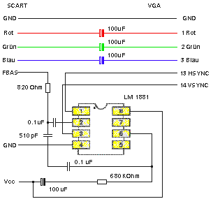

|
|
18.10.1 RGB / VGA-Wandler
Ein RGB nach VGA Adapter
Hier finden Sie eine winzige Schaltung die es ermöglicht ein
RGB-Signal auf einem VGA-Monitor darstellen zu können. Die
Bildqualität ist nicht berauschend, aber es Funktioniert als
Behelfslösung immer.
 Abbildung 1 - Ein RGB/VGA Wandler
Die Spannungsversorgung beträgt +5 VDC. Beachten Sie bitte
das GND und der Kabelschirm das gleiche Potential haben. Also GND. Die
Anwendung dieser Schaltung liegt dabei ein per SCART geliefertes
Videosignal auf einem herkömlichen VGA-Monitor darstellen zu
können. Das Funktioniert auch mit einem Videobeamer.
Neuere SubD 15 polige VGA Belegungen. Beachten sie bitte das es
bei neueren Monitoren einige Signale mehr gibt die geschaltet werden
müssen. Der Datenbus, über den die Grafikhardware
erfährt was der Monitor kann, reagiert oft nicht sauber auf eine
Umschaltung. Wird keine Grafikkarte verwendet die diese Signale
auswertet brauchen die Verbindungen nicht hergestellt zu werden.
Einfach offen lassen. NICHT auf GND legen!
01: Rot 02: Grün 03: Blau 04: - 05: GND 06: Rot GND 07: Grün GND 08: Blau GND 09: +5V 10: Sync GND 11: Monitor ID0 12: SDY / IC2-Datenbus 13: HSYNC (CSYNC) 14: VSYNC 15: SCL / IC2-Takt
|
|
|